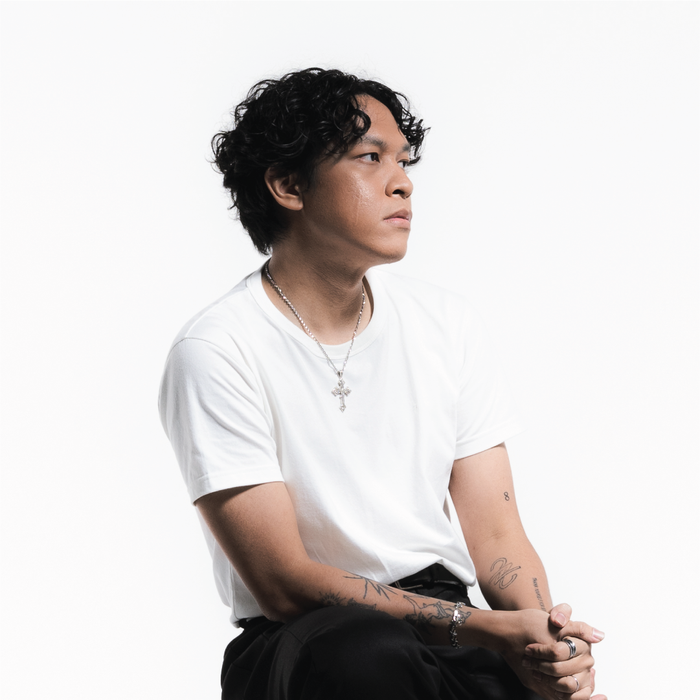
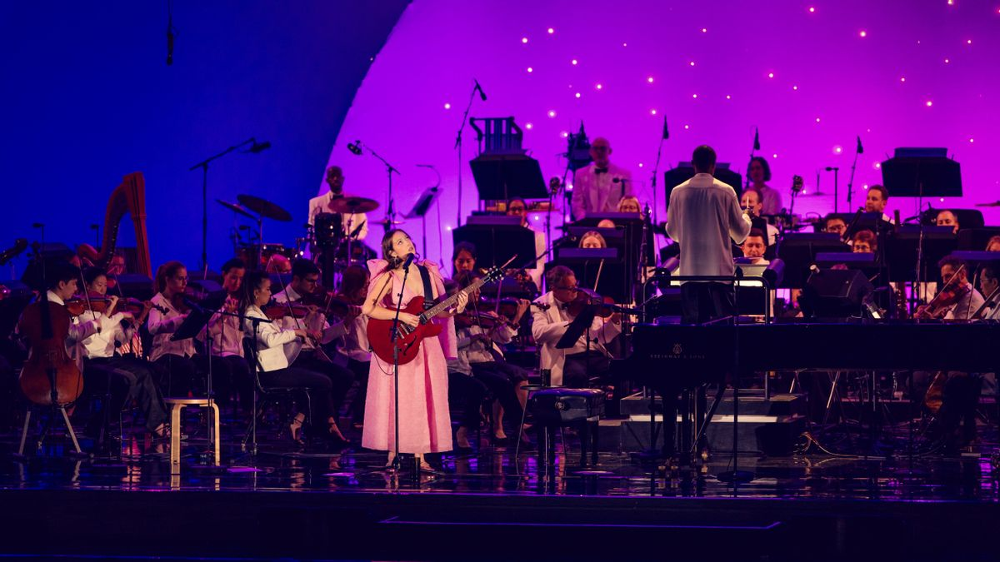
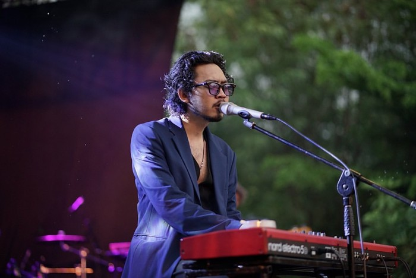
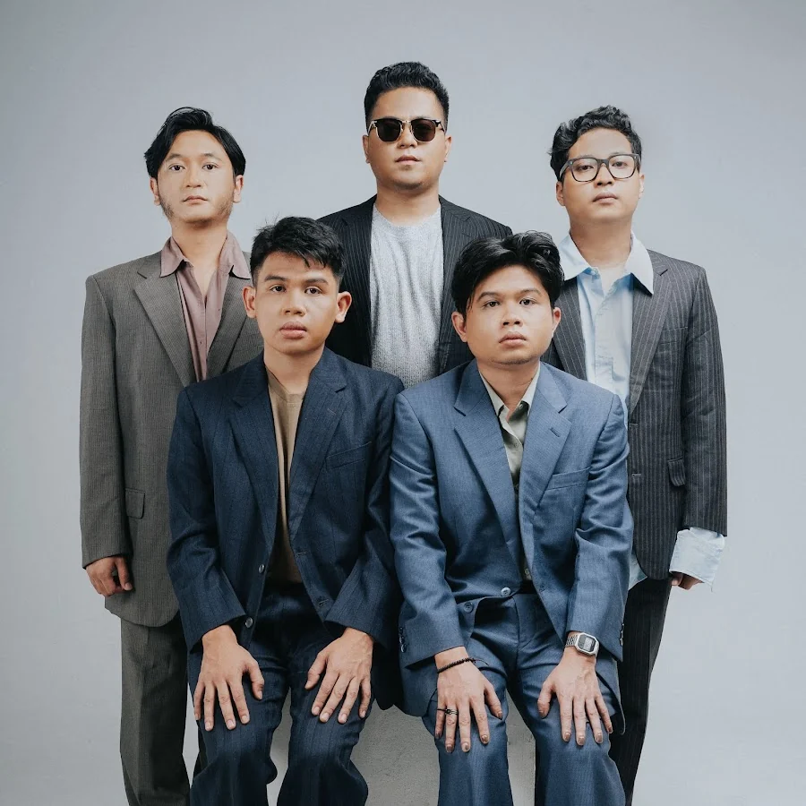
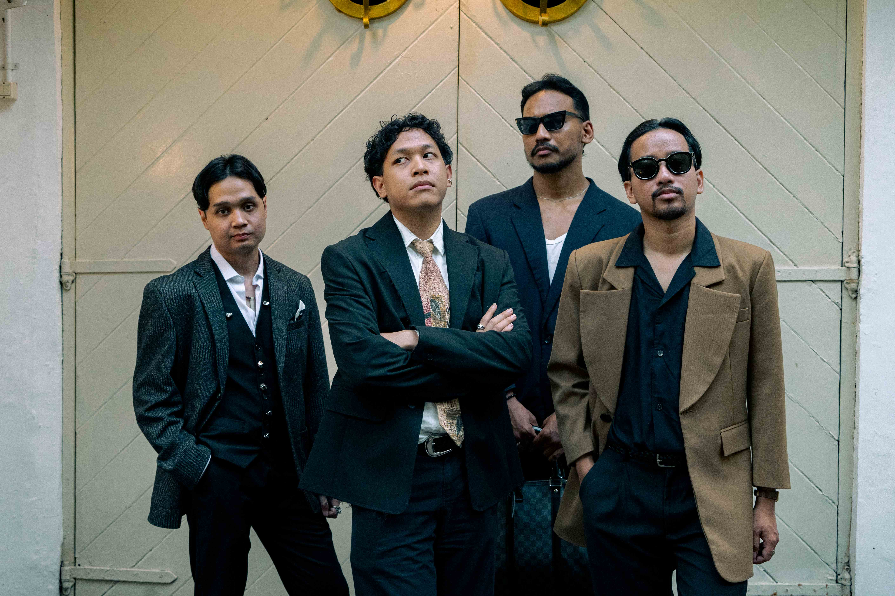

Hindia
Genre: Indie pop, alternative
Hari tampil: Day 1 · June 15
3 Days. 6 Indonesian Artists. Infinite Vibes.
June 15–17, 2026 | Jakarta International Expo

WPU StreamFest 2026: Neon Nights adalah festival musik yang menghadirkan perpaduan antara musik, kreativitas, dan energi anak muda dalam satu pengalaman yang tak terlupakan. Mengusung tema neon futuristik dengan permainan cahaya, dekorasi digital, dan atmosfer penuh warna, festival ini menjadi tempat berkumpulnya Gen Z untuk menikmati penampilan musisi favorit, mengekspresikan diri, dan menciptakan kenangan bersama teman-teman. Dari lagu-lagu penuh makna hingga musik yang membangkitkan semangat, WPU StreamFest menghadirkan pengalaman festival yang lebih dari sekadar konser.
Tidak hanya berfokus pada hiburan, WPU StreamFest 2026 juga berkomitmen untuk menciptakan festival yang modern dan ramah lingkungan. Melalui konsep eco-friendly, festival ini mendorong penggunaan tumbler, pengurangan sampah plastik, dan pengelolaan sampah yang bertanggung jawab. Sistem cashless payment membuat transaksi makanan, minuman, dan merchandise menjadi lebih cepat dan praktis. Dengan tiga panggung unik, area kuliner, spot foto neon, serta ruang bersantai, Neon Nights menjadi destinasi ideal bagi Gen Z untuk menikmati musik, membangun koneksi, dan merayakan kebebasan berekspresi.

Genre: Indie pop, alternative
Hari tampil: Day 1 · June 15
Genre: Pop, singer-songwriter
Hari tampil: Day 1 · June 15

Genre: Pop, alternative pop
Hari tampil: Day 1 · June 15

Genre: Pop, jazzy pop
Hari tampil: Day 2 · June 16

Genre: Folk, pop, ballad
Hari tampil: Day 2 · June 16

Genre: Alternative rock, indie rock
Hari tampil: Day 3 · June 17
| Waktu | Artist / Kegiatan | Stage |
|---|---|---|
| Day 1 · Monday, June 15, 2026 | ||
| 15.00–16.00 | Gate Open & Festival Welcome | Chill Zone |
| 16.00–17.00 | Opening Act | Side Stage |
| 17.30–18.30 | Bernadya | Main Stage |
| 19.00–20.00 | Pamungkas | Main Stage |
| 20.30–22.00 | Hindia | Main Stage |
| Day 2 · Tuesday, June 16, 2026 | ||
| 15.00–16.00 | Gate Open & Acoustic Session | Chill Zone |
| 16.30–17.30 | Local Opening Act | Side Stage |
| 18.00–19.15 | Nadin Amizah | Main Stage |
| 19.45–21.15 | Juicy Luicy | Main Stage |
| Day 3 · Wednesday, June 17, 2026 | ||
| 15.00–16.30 | Community & Chill Session | Chill Zone |
| 17.00–18.00 | Local Opening Act | Side Stage |
| 18.30–20.00 | .Feast | Main Stage |
| 20.15–21.00 | Closing Celebration | Main Stage |